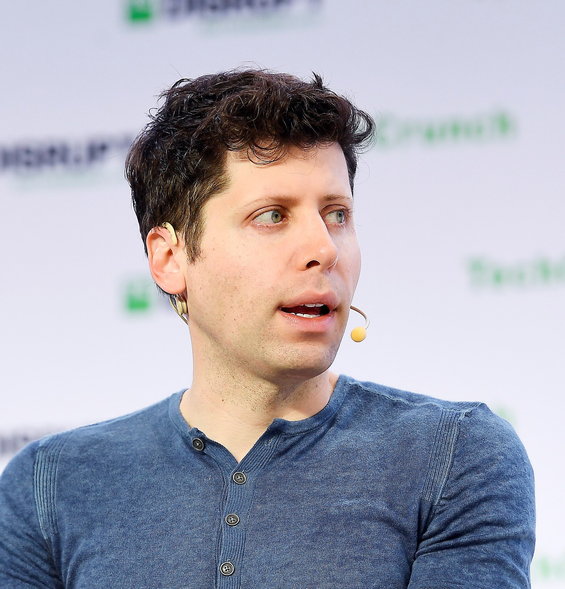
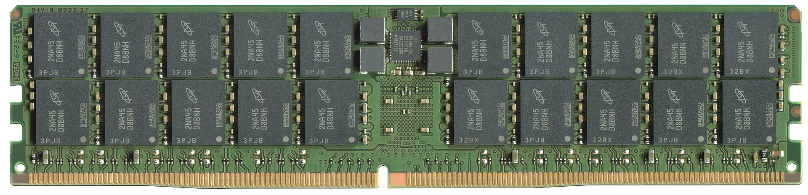

Vol. I · No. 39 · Friday, June 26, 2026 · 14 items · ~14 min read
Washington tells OpenAI to hold its newest model back, the first time it has gated a frontier system before launch; an AI-driven memory crunch jolts Apple to its worst day in a year; a doublet earthquake devastates Venezuela; and the Court hands the government back-to-back immigration wins.
The Splash · Artificial Intelligence · San Francisco
Washington tells OpenAI to hold GPT-5.6 back, the first time it has gated a frontier model before launch

OpenAI chief executive Sam Altman, who told staff the government would approve GPT-5.6 access customer by customer. — Wikimedia Commons / TechCrunch, CC BY 2.0
OpenAI will release its newest model, GPT-5.6, only to a small set of government-approved enterprise customers, chief executive Sam AltmanPersonCo-founder and chief executive of OpenAI, the maker of ChatGPT. He is steering the company toward a confidential initial public offering even as Washington tightens its grip on frontier releases. told staff in an internal question-and-answer session on Wednesday, June 25, with federal officials "approving access customer by customer" during a preview period. The request, according to Axios, came from the White House Office of Science and Technology PolicyInstitutionThe White House office that advises the president on science and tech policy. With the national cyber director's office, it asked OpenAI to limit GPT-5.6 while it builds a federal model-evaluation framework. and the Office of the National Cyber Director; Altman said he discussed the model directly with Commerce Secretary Howard LutnickPersonU.S. Commerce Secretary and the administration's point man on AI export controls. He wanted the relevant parts of government to test and clear GPT-5.6 before any wider release., who wanted the relevant agencies to test and clear it first.
It is the first time the U.S. government has preemptively asked an American AI company to restrict a model's launch before release. The stated rationale is capability: officials and OpenAI describe GPT-5.6 as roughly on par with MythosConceptShorthand for the most powerful frontier tier, named for Anthropic's export-controlled Mythos model. It marks the capability threshold at which Washington now intervenes before a model ships., the Anthropic tier that triggered an export-control action earlier this month. The move lands roughly two weeks after the June 12 directive that forced Anthropic's most advanced models offline, hardening a pattern in which the state, not the lab, decides when the frontier reaches the public.
Altman called the arrangement "not our preferred long-term model," and said OpenAI hopes to follow with a broader release "a couple of weeks later" if the limited preview goes well. The episode turns access to a frontier system into something the government now rations case by case, the exact pre-deployment gatingConceptGovernment review and approval of a frontier model before public release. GPT-5.6 is the first U.S. case of customer-by-customer federal clearance, built on export-control precedent rather than any statute. that an OpenAI heading toward public markets will have to describe to investors as a live regulatory risk.
"Not our preferred long-term model."
— Sam Altman, to OpenAI staff on the restricted GPT-5.6 release, June 25
Markets · Cupertino & Redmond
The AI memory crunch reaches the checkout aisle, and Apple has its worst day in a year
Apple raised prices across its Mac and iPad lines by more than 20% on many models on Thursday, June 25, with the MacBook Air base climbing to $1,299 from $1,099 and the MacBook Pro to $1,999 from $1,699; Microsoft said it will raise Xbox Series X and S consoles by $100 to $150 on August 1, its second hike in under a year. The cause is DRAMConceptDynamic random-access memory, the commodity chip in every phone, PC, and console. AI data centers are buying it in bulk, and spot prices rose as much as 98% in a single quarter.: spot pricesConceptThe price for immediate delivery of a commodity, as opposed to long-term contract pricing. Spot memory ran up first and fastest as AI buyers competed for scarce supply. jumped as much as 98% in the first quarter and are projected to climb a further 58% to 63% this quarter as AI data centers absorb supply.
Apple shares fell about 6% on the day, the company's worst single session in more than a year, erasing roughly $265 billion in market value; Microsoft dropped about 3.8% and the rest of the Magnificent SevenConceptThe cohort of mega-cap technology stocks (Apple, Microsoft, Nvidia, Alphabet, Amazon, Meta, Tesla) that drives most of the S&P 500's moves. They fell broadly on the memory-cost news. fell with it. The selloff reframes the AI build-out as a margin threat that now reaches consumer hardware, not just a data-center capital story, since the same scarce memory that lifts chipmakers' prices is squeezing the device makers that have to buy it.
News · Caracas · cross-spectrum LCR
Venezuela's worst quake in over a century kills hundreds; the U.S. pledges aid and sends warships
Two strike-slip earthquakes struck western Venezuela on the evening of June 24, a magnitude 7.2 followed 39 seconds later by a 7.5 mainshock, a rare doubletConceptTwo large earthquakes striking nearly the same place seconds to hours apart, the first triggering the second. Doublets compound damage by hitting already-weakened structures before they can be cleared. centered about 100 miles west of Caracas. It is the largest quake to hit the country since 1900. The health minister put the toll at at least 235 dead and more than 4,300 injured by June 25, with the coastal state of La GuairaPlaceVenezuela's coastal state north of Caracas, home to the country's main international airport and port. It was identified as the hardest-hit zone, and the airport was closed. the hardest hit and the main international airport shut.
Acting President Delcy RodriguezPersonVenezuela's acting president and vice-president, a senior figure in the governing party. She declared the post-quake state of emergency while Nicolas Maduro's role stayed in the background. declared a state of emergency, and the USGSInstitutionThe U.S. Geological Survey, which models quake impact. Its PAGER system put a 44% chance the death toll exceeds 10,000, signaling the count may climb steeply. impact model put a 44% chance the toll eventually exceeds 10,000. In a notable turn given frosty relations, the Trump administration pledged $150 million in aid and deployed Navy warships to assist.
Artificial Intelligence
Capability, capital, and the machines that build the machines
AI · San Jose
OpenAI tapes out its first chip, and aims it straight at Nvidia's pricing power
Broadcom's San Jose headquarters; the chipmaker co-designed and will build OpenAI's first processor. — Wikimedia Commons / CC BY-SA
OpenAI and BroadcomInstitutionThe semiconductor and infrastructure-software giant (ticker AVGO) that co-designed and will manufacture OpenAI's first chip, positioning itself as the leading custom-silicon partner challenging Nvidia. unveiled "Jalapeno," OpenAI's first custom processor, a reticle-sized ASICConceptAn application-specific integrated circuit, hard-wired for one task. Less flexible than a general-purpose GPU but cheaper and more power-efficient, which is the bet behind Jalapeno. built for inferenceConceptRunning a trained model to answer users, as opposed to training, which builds it. Inference is the recurring cost center that grows with every ChatGPT query, and the target of Jalapeno's design. rather than training. The chip went from design to tape-out in roughly nine months, a cycle the company says was accelerated by its own models, and targets performance-per-watt "substantially better" than the current state of the art, with first deployment by the end of 2026.
Markets read it as a long game rather than an overnight threat: Broadcom rose about 2% on June 25, more muted than some expected given the late-2026 timeline, while Nvidia dipped slightly and JPMorgan lifted its Broadcom target to $580 from $500. The strategic point is the economics of inference, the part of AI that recurs forever once a model ships; a cheaper, task-specialized chip is OpenAI's lever against paying Nvidia's margin on every query, even if ASICs sacrifice the flexibility that keeps GPUs dominant.
Markets & Deals
Capital markets, the deal flow, and the price of memory
Corporate · Boise
Micron's memory quarter quadruples, the other side of Apple's pain

A Micron memory package; the company's high-bandwidth memory is sold out through 2027. — Wikimedia Commons / CC BY-SA
MicronInstitutionThe largest U.S. maker of memory chips and one of three global DRAM producers. Its results are the cleanest public read on AI-driven memory demand. reported fiscal third-quarter revenue of $41.46 billion against roughly $35.9 billion expected, with adjusted earnings of $25.11 a share and a record gross margin near 84.6%, after the close on June 24; the stock rose about 14.6% on June 25. Its cloud-memory unit booked $13.77 billion at an 83% margin, up from $3.39 billion a year earlier, as HBMConceptHigh-bandwidth memory, stacked DRAM bonded to AI accelerators. It is the scarce, high-margin component Nvidia's chips need, and the reason Micron's margins jumped while device makers' costs exploded. demand ran hot.
The company said its HBM is effectively sold outConceptContracted in advance through calendar 2027, with demand visibility into 2028. Locked-in volume means revenue is largely set regardless of near-term price swings, the visibility investors prize most. through calendar 2027, with HBM4 ramping twice as fast as the prior generation and already past $1 billion in revenue, and guided next quarter to about $50 billion against $44 billion expected. Micron's pricing power is the exact mechanism squeezing Apple and Microsoft: the same AI demand that lifts the memory maker's margins is the cost the device makers must now pass to buyers.
Corporate · Darmstadt
Germany's Merck KGaA strikes an $11.3B deal for Bio-Techne
Merck KGaAInstitutionThe German pharmaceutical and life-science group, the original Merck founded in 1668. It is legally distinct from the U.S. company Merck & Co., which split off after World War I. agreed on June 25 to acquire Bio-TechneInstitutionA Minneapolis-based supplier of reagents, proteins, antibodies, and analytical instruments to drug developers and research labs (Nasdaq: TECH). Merck is buying the toolmaker, not a drug. for $73.00 a share in cash, about $11.3 billion, a premium of roughly 24% to the prior close and about 36% over the one-month VWAPConceptVolume-weighted average price. Boards favor a premium quoted against this smoother benchmark, rather than a single day's close, to justify a deal's fairness to shareholders.. The target's shares jumped more than 20% before the open.
It is the German group's largest deal since its roughly $17 billion purchase of Sigma-Aldrich a decade ago, funded with cash and new debt and expected to close in the second half of 2026. The logic is "picks and shovels": rather than bet on any single therapy, Merck is buying the supplier of the reagents and instruments every drug developer needs, deepening a life-science-tools franchise that sells into the whole industry.
Law & the Courts
A closing term turns to the border
News · Washington · cross-spectrum LLC
The Court lets the government end TPS for Haiti and Syria, 6-3
The Supreme Court, which issued back-to-back immigration rulings on June 25 as the term closes. — Wikimedia Commons / CC BY-SA
In Mullin v. Doe (No. 25-1083), decided June 25, the Supreme Court ruled 6-3 that the Homeland Security secretary's decision to terminate Temporary Protected StatusConceptA designation letting nationals of countries hit by war or disaster live and work in the U.S. legally. It is granted, and can be ended, at the executive's discretion. for Haitian and Syrian nationals is committed to executive discretion and effectively unreviewable. Justice AlitoPersonSamuel Alito, the senior conservative justice appointed by George W. Bush in 2006. He wrote both of the June 25 immigration majorities. wrote for the majority; Justice Kagan dissented, joined by Sotomayor and Jackson.
The holding extends a run of decisions narrowing judicial reviewConceptCourts' power to second-guess agency action. The majority treats TPS termination as discretionary and largely shielded from review, shrinking the Administrative Procedure Act's reach over immigration. of discretionary immigration calls. The practical effect is to clear the path to strip protection from hundreds of thousands of long-resident TPS holders, some present for decades; BigLaw employment groups have already issued client alerts on the work-authorization disruption for employers.
News · Washington · cross-spectrum LC
Justices bless border "metering": no asylum right until you set foot in the U.S.
In Mullin v. Al Otro Lado (No. 25-5), also decided June 25 by a 6-3 vote with Alito again writing, the Court held that a noncitizen standing on the Mexican side of the border has not "arrived in the United States" under the immigration statute until physically setting foot on U.S. soil. MeteringConceptThe practice, first used by Customs and Border Protection in 2016, of capping the number of asylum seekers processed at a port of entry each day, turning people back at the line., the practice of capping daily inspections, therefore violates neither the asylum-application right nor the inspection requirement.
The majority rests on a textual readingConceptTextualism: interpreting a statute by the ordinary meaning of its words. Here the majority hangs asylum eligibility on the single word "arrive," reading it as physical entry. of the word "arrive"; Justice SotomayorPersonSenior liberal justice, appointed by Obama in 2009. Her 35-page dissent argued the majority ignored statutory context, history, and the executive's own longstanding reading of the law. filed a 35-page dissent joined by Kagan and Jackson, with Jackson writing separately. The ruling legitimizes a tool that lets the government throttle border asylum processing by drawing a line at physical presence.
News · Washington · cross-spectrum LCR
A rare retort from the bench as Alito answers Sotomayor's dissent
After Justice SotomayorPersonSonia Sotomayor, the senior liberal justice. Reading a dissent aloud is her sharpest available signal of disagreement, used here against the asylum-metering ruling. read her Al Otro Lado dissent aloud for about ten minutes on June 25, longer than the majority author's first two opinion summaries combined, Justice Alito did something almost never seen: he answered back from the bench. "There is much that I would have added to my bench statement had I known there would be a dissent read," he said, turning heads in the courtroom.
An oral dissentConceptReading a dissent aloud from the bench, rather than just filing it in writing, is the Court's traditional signal of unusually deep disagreement with the majority. is itself a signal of deep disagreement; a same-day rebuttal from the majority author is rarer still, with the closest recent parallel being Justice Scalia's short bench reply to a death-penalty dissent in 2015. The exchange is being read as another marker in the erosion of the Court's collegiality normsConceptThe customary restraint that keeps justices' disagreements in writing and off the bench. Its visible fraying is itself a story about the institution's health..
Framing noteLeft-leaning coverage (Above the Law) cast Alito's reply as petulant "whining," while right-leaning coverage (RedState) framed Sotomayor's oral dissent as an "angry" overreach.
The World
A chokepoint and a contagion
News · Strait of Hormuz · cross-spectrum LCR
A cargo ship is struck off Oman, and the UN pauses Hormuz evacuations
The Strait of Hormuz, the chokepoint through which roughly a fifth of the world's oil passes. — Wikimedia Commons / NASA, public domain
The Singapore-flagged cargo ship Ever Lovely was struck on its starboard side by a projectile about 14 kilometers southeast of Oman's Dahit port on Thursday, June 25, while exiting the Strait of HormuzPlaceThe narrow chokepoint between Iran and Oman through which roughly 20% of the world's oil passes. Any disruption spikes energy prices and shipping-insurance rates.; there was damage but no injuries. The IMOInstitutionThe International Maritime Organization, the UN's global shipping regulator. Its secretary-general ordered the Hormuz evacuation framework paused after the strike. paused its Strait of Hormuz evacuation framework "until further clarity," though the struck vessel was not transiting under it.
The strike came hours after Iran's "Persian Gulf Strait Authority" warned that transit outside Tehran-designated routes "will not be covered by the guarantee of safe passage," and Iran's foreign minister said Tehran and Oman would discuss the "future administration" of the strait. It hardens the week-old US-Iran understanding into a live test of whether the world's most important oil corridor stays open in practice.
Framing noteRight-leaning coverage (Fox, citing U.S. officials) flatly attributed the strike to an Iranian IRGCInstitutionIran's Islamic Revolutionary Guard Corps, the parallel military that controls Gulf naval operations. U.S. officials blamed it for the drone strike on the Ever Lovely. drone, while center and left outlets (Al Jazeera, NPR) described an "attack" without firm attribution.
News · Kinshasa · cross-spectrum LCR
Congo's Ebola outbreak turns into the fastest-growing on record; France logs a case
The Democratic Republic of the Congo's health ministry counted 1,118 confirmed cases and 291 deaths by June 24 in an outbreak caused by the BundibugyoConceptOne of six Ebola species, first identified in Uganda in 2007. It has a lower historic fatality rate than Zaire Ebola but, critically, no licensed vaccine or treatment. species, for which there is no approved vaccine or treatment. The UN calls it the fastest first-month spread of any Ebola outbreak in Africa, reaching 250 deaths in 37 days against 78 days in the 2014-16 West Africa epidemic.
The epicenter is the conflict-torn province of IturiPlaceA province in northeastern DRC, the outbreak's epicenter with roughly 1,020 cases across 22 health zones. Armed-group violence there hampers the medical response., with about 1,020 cases. On June 24, France confirmed its first case, a humanitarian doctor who flew from Kinshasa to Paris and was isolated on landing, the outbreak's first spread beyond Africa. The WHOInstitutionThe World Health Organization, coordinating the response. Its case count (1,048) trails the DRC ministry's higher figure, a gap that illustrates how uncertain real-time surveillance is. models a 70% chance of cross-border spread to South Sudan.
Entertainment & EASL
Studio economics, a super-debut, and the local bench
Culture · Bellevue, Wash.
Sony guts the Destiny team as it cuts at least 292 at Bungie
Bungie, the studio Sony bought for $3.6 billion in 2022, is now roughly a third of its former size. — Wikimedia Commons / Bungie
A WARN ActConceptThe federal law requiring large employers to file public state notices before mass layoffs. It is how the 292 figure surfaced before Bungie disclosed a number. notice filed in Washington State shows at least 292 full-time roles cut at BungieInstitutionThe Bellevue studio behind Halo and Destiny, bought by Sony for $3.6 billion in 2022. Repeated cuts have left it roughly a third of its peak size.'s Bellevue headquarters, with staff notified June 25 and a separation date of July 9. Sony's chief executive confirmed the cuts hit "most of the Destiny team" plus some on the unreleased Marathon and the entire cinematic group; insiders cited 400-plus on the layoff call.
The cuts follow the sunset of Destiny 2's live-service development earlier in June and drop Bungie's headcount toward roughly 500, down from a peak near 1,300. They cap an industry-wide retreat from the live-serviceConceptThe recurring-revenue model of a single game updated for years, which publishers chased after 2020. Destiny's sunset and Marathon's troubled rollout mark its broad collapse. model that publishers chased after 2020, and put a hard number on how far Sony's $3.6 billion bet has unwound.
Culture · Los Angeles
Supergirl opens soft as the rebooted DC slate meets a Toy Story buzzsaw
DC Studios' Supergirl, directed by Craig Gillespie and starring Milly AlcockPersonThe Australian actor known for House of the Dragon, cast as Kara Zor-El. Supergirl is her first turn headlining a studio tentpole., opened June 26 in about 3,600 domestic theaters with industry trackingConceptPre-release surveys and data studios use to forecast opening-weekend ticket sales. Tracking ranges are estimates, and actual debuts often land outside them. pointing to a roughly $47 million to $50 million domestic debut and an $80 million to $90 million global start. It enters a crowded frame against Toy Story 5 in its second weekend (projected $80 million to $90 million) plus new openers.
The number matters less as a single weekend than as an early stress test of the DCUConceptThe rebooted DC Universe overseen by James Gunn and Peter Safran. Supergirl is its second theatrical release after Superman, so a soft open feeds doubt about the slate's commercial runway., James Gunn and Peter Safran's rebooted theatrical universe, after Superman. A roughly $50 million open leaves the film leaning on overseas returns and long legs to clear profitability once marketing is counted.
Culture · South Florida · Miami
The Heat draft a No. 13 they never get to keep, a footnote to the Giannis deal
In the 2026 NBA Draft, which closed June 25, the Miami Heat used the No. 13 pick to select Tennessee forward Nate Ament and immediately routed his rights to Milwaukee, a paper transaction required by the terms of the blockbuster Giannis AntetokounmpoPersonThe two-time MVP traded from Milwaukee to the Miami Heat this offseason, the deal reshaping the franchise's roster and cap sheet. Its terms forced the No. 13 routing. trade. The Heat kept their own No. 41 selection.
It is a small mechanical wrinkle, but a revealing one: NBA rules can compel a team to make a selection on another's behalf when picks are conveyed in a trade, so Miami's lottery slotConceptOne of the top 14 draft picks, assigned by a weighted draw among non-playoff teams. No. 13 falls inside the lottery, making it a valuable asset to convey in a trade. was always Milwaukee's under the trade mechanicsConceptThe cap and asset rules that govern how draft picks move in NBA trades. A pick conveyed in a deal is often exercised by the original team purely as a pass-through. of the deal. For a Miami market built around the franchise's books, the draft was less an acquisition than a closing entry on the Giannis trade.
Compiled by Matthew Yellin · mattyellin.com · Est. May 2026 · A cross-spectrum brief drawn each morning from wires, filings, and the trade press